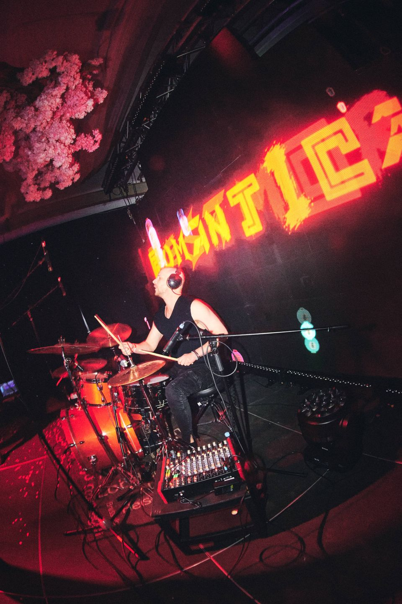
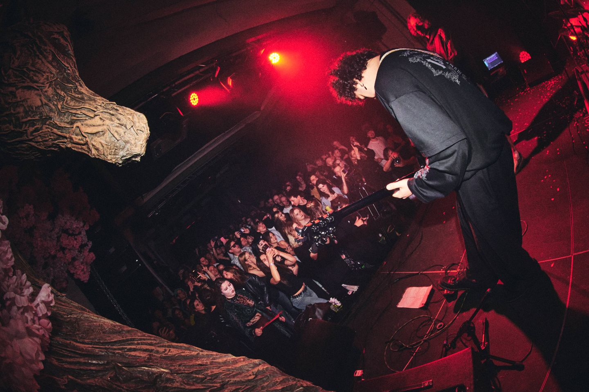
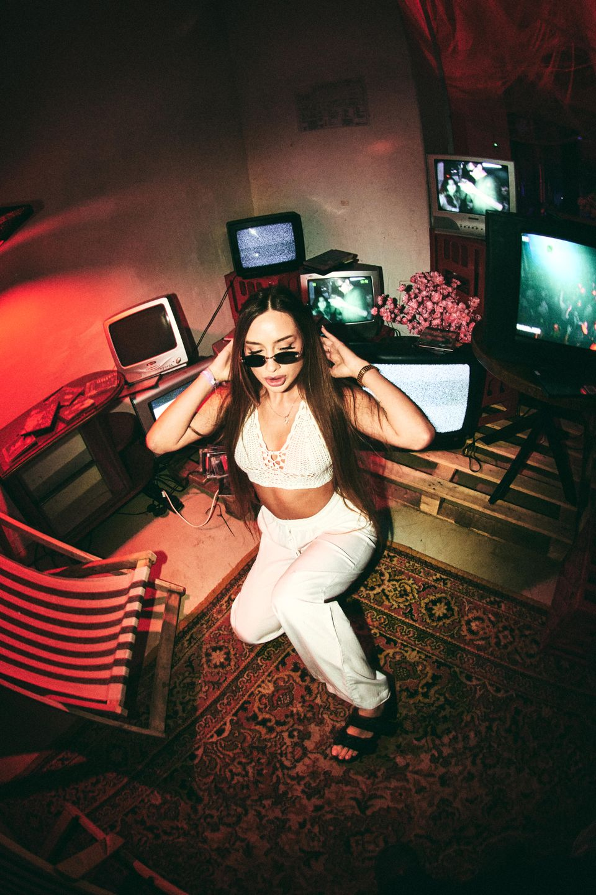
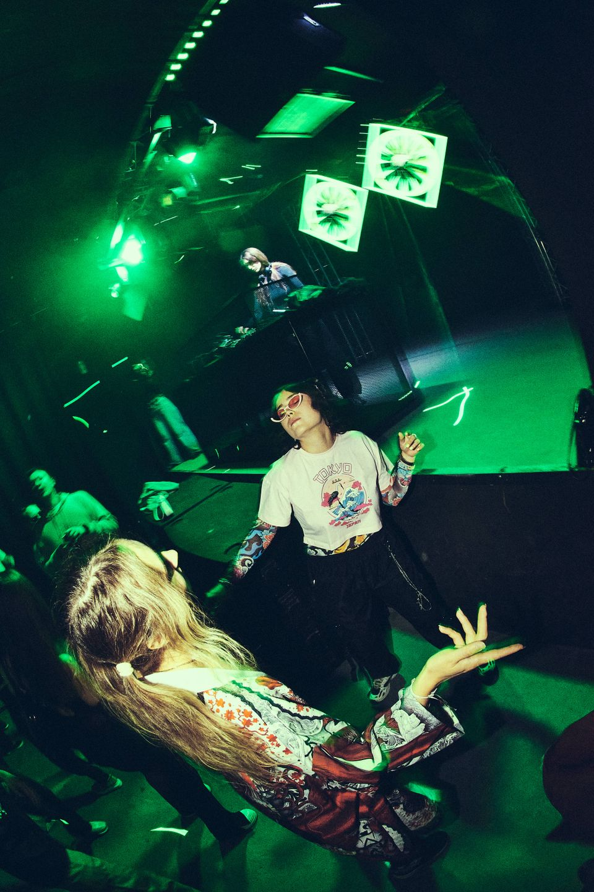
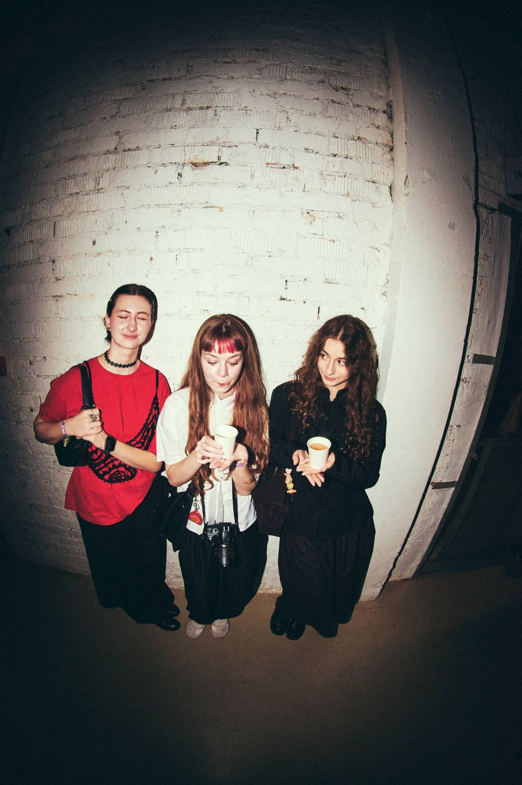
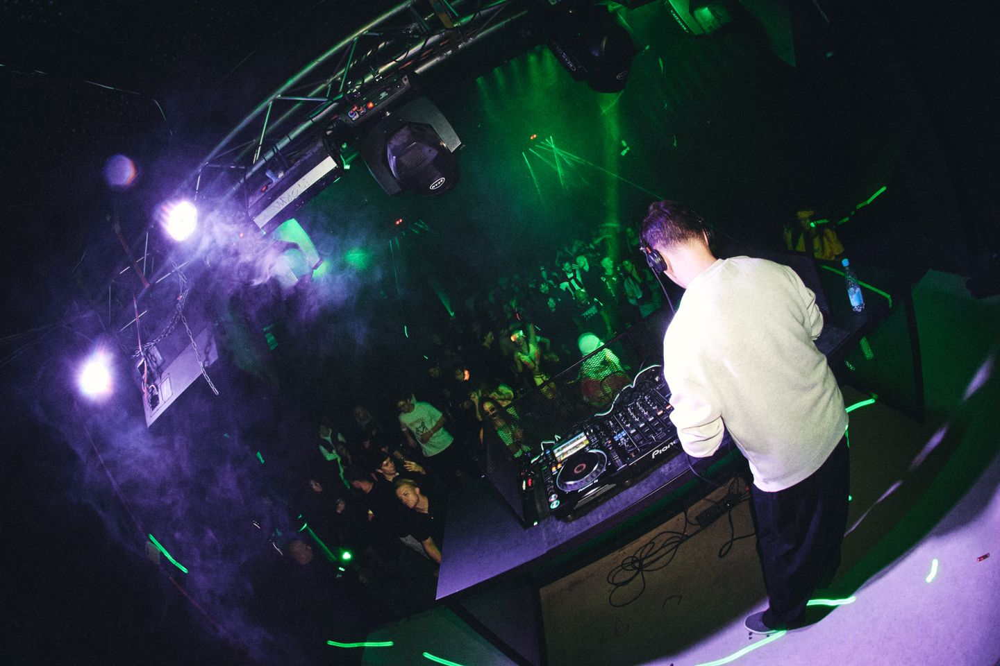
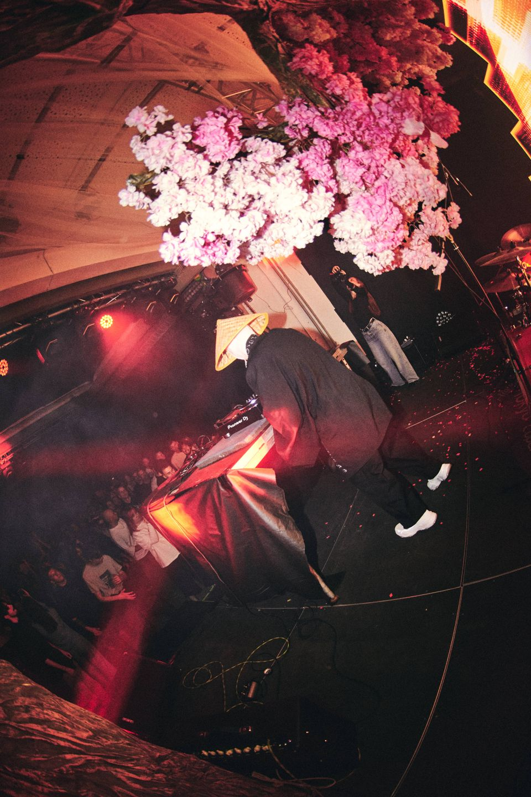
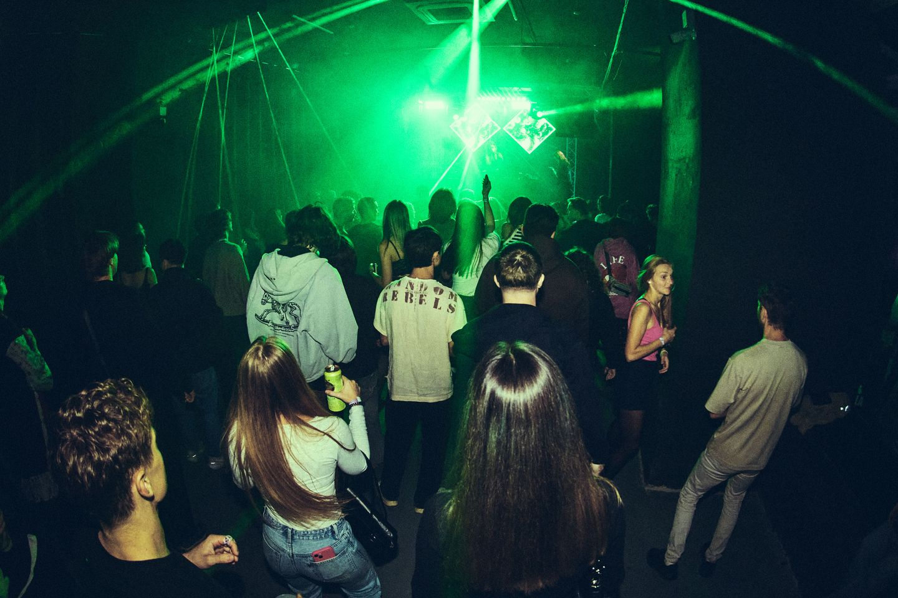
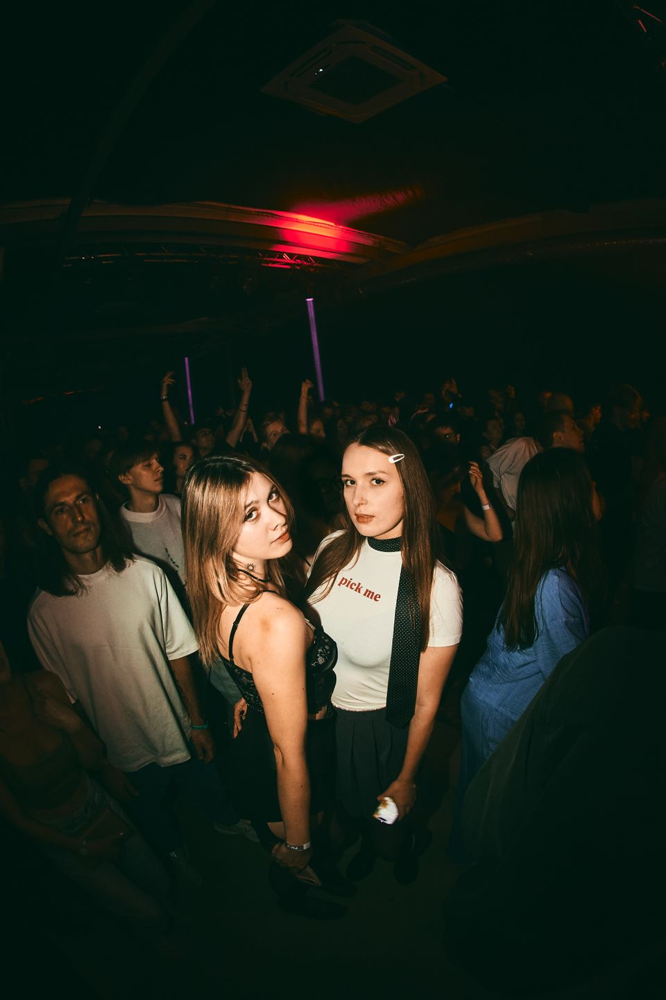
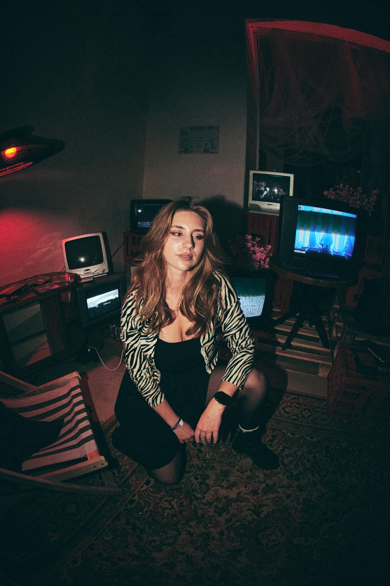

Взгляд изнутри
Свет сцены, движение толпы, случайный взгляд. В этой серии — атмосфера FUJI FESTIVAL: громкая, яркая, настоящая.
Здесь собраны кадры, в которых событие остаётся живым даже после того, как музыка закончилась.
Живые моменты в моём объективе
СОЗДАДИМ ↗
КАДРЫ ВМЕСТЕ






О фотографии

Свет сцены, движение толпы, случайный взгляд. В этой серии — атмосфера FUJI FESTIVAL: громкая, яркая, настоящая.
Здесь собраны кадры, в которых событие остаётся живым даже после того, как музыка закончилась.
Направления
Фотография сохраняет не только то, что происходило на сцене. Она собирает историю из людей, деталей и коротких мгновений между ними.

Портфолио

FUJI FESTIVAL · Октябрь 2026
FUJI FESTIVAL · Октябрь 2026

FUJI FESTIVAL · Октябрь 2026
Обратная связь
У каждого события — своя история. Расскажи, какую ты хочешь сохранить.
Написать в TelegramУчебная форма: сообщения не отправляются. Для связи используй Telegram.